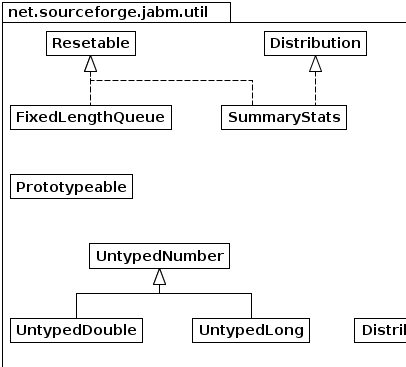
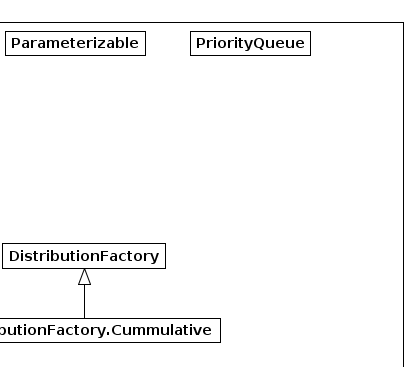
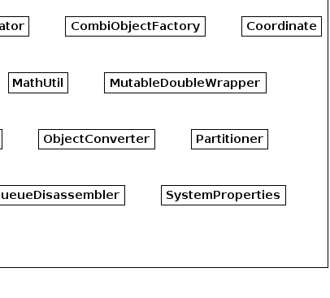
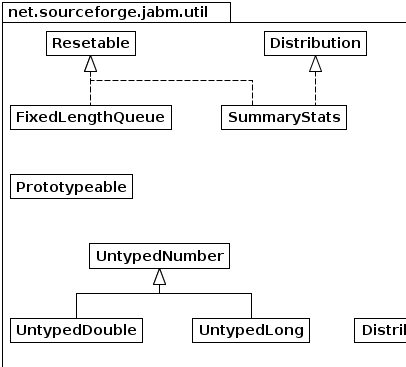
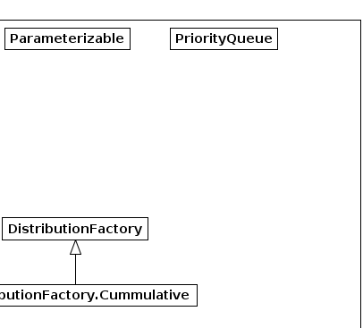
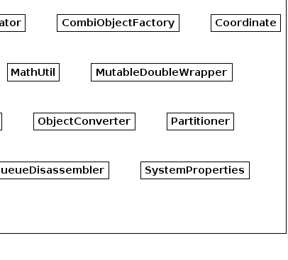

|  |  |
 |
 |
|
|||||||||
| PREV PACKAGE NEXT PACKAGE | FRAMES NO FRAMES | ||||||||
| Interface Summary | |
|---|---|
| Distribution | |
| Parameterizable | Deprecated. |
| PriorityQueue | |
| Prototypeable | |
| Resetable | Classes implementing this interface indicate that their state is resetable. |
| Class Summary | |
|---|---|
| AbsoluteContinuousDistribution | A random variate that takes on the absolute value of values drawn from an underlying probability distribution. |
| BaseNIterator | An iterator that enumerates the base N representation of every non-negative integer that can be represented within the specified number of digits. |
| CombiObjectFactory | |
| Coordinate | |
| DistributionFactory | |
| DistributionFactory.Cummulative | |
| FixedLengthQueue | A queue with fixed length, which can be useful when tracking a sliding window on a data series |
| HashCodeComparator<T> | |
| IdAllocator | Utility class for handing out unique ids. |
| MathUtil | Miscalleneous mathematical functions. |
| MutableDoubleWrapper |
A simple wrapper for a primitive double value which is
publicly mutable. |
| MutableIntWrapper |
A simple wrapper for a primitive int value which is publically
mutable. |
| MutableStringWrapper | |
| ObjectConverter | Provides various methods of translating a string argument to an object of a certain type. |
| Partitioner | A class that iterates over all numerical partitions of n into k distinct parts including commutative duplications and parts containing zero. |
| Permutator | |
| Point | |
| Properties | The Properties class represents a persistent set of
properties. |
| QueueDisassembler | An iterator that destructively iterates over a PriorityQueue, that is each item that is returned is removed from the top of the heap. |
| SummaryStats | A utility class for cumulative tracking of stats for a set of doubles. |
| SystemProperties | A set of property bindings that are initialised from system properties passed on the command line (typically using the "-D" option). |
| TimeSeriesWindow | |
| UniformDistribution | |
| UntypedDouble |
Polymorphic version of java.lang.Double. |
| UntypedLong |
Faster version of java.lang.Long. |
| UntypedNumber | This is an extension of Java's Number class that provides methods for performing untyped polymorphic arithmetic. |
|  |  |
|
 |
|
|||||||||
| PREV PACKAGE NEXT PACKAGE | FRAMES NO FRAMES | ||||||||